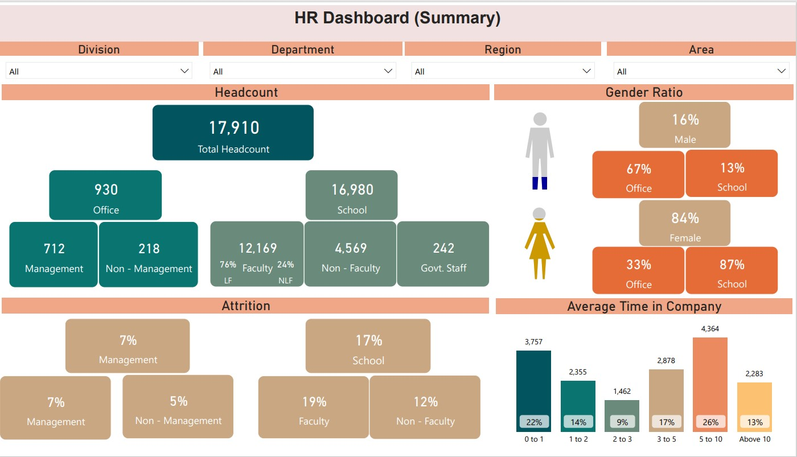
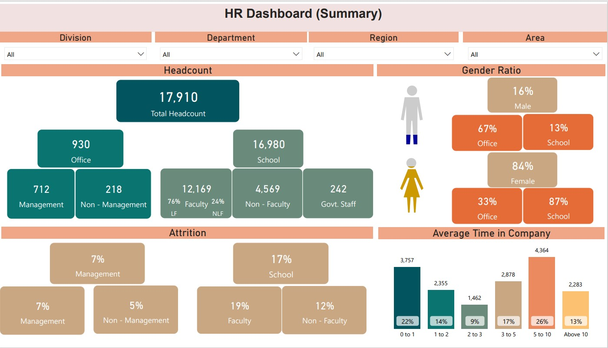
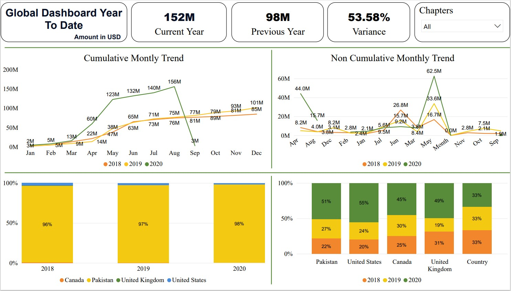
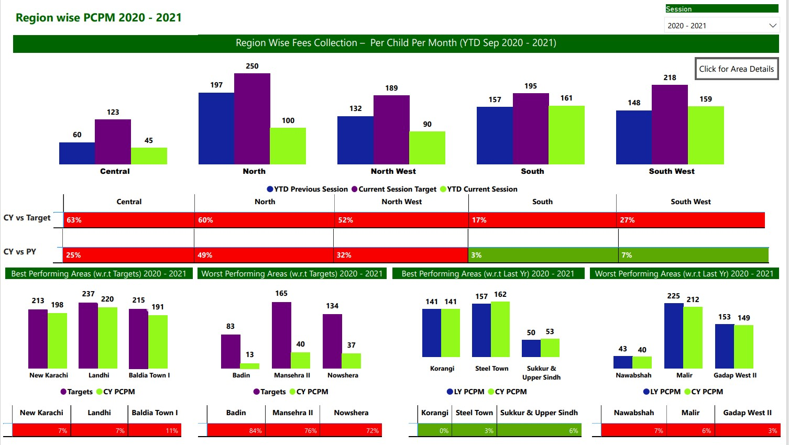
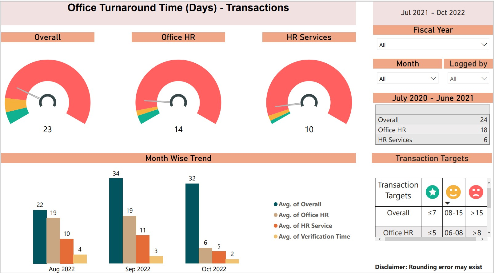

I graduated from NED University in Karachi in 2016 with a degree in Computer and Information Systems (BE CIS). I have over 8 years of experience in the industry, working on different projects as a Business Intelligence developer, data engineer and Power Platform developer.
I previously worked as a Software Developer at TCF Head Office (The Citizens Foundation). Currently, I am employed at Systems Limited, a well-known IT company in Pakistan. In my role as a Data Engineer and Data Analytics professional at Systems, I have worked on various projects, including Sciensus UK and British American Tobacco (BAT).
 

I created this dashboard for the HR department at TCF Head Office to monitor various KPIs, including attendance, student enrollment, gender ratio, and operational utilization of schools in specific areas, regions, or across TCF (overall).

This dashboard is consisting of the Donor Perfect data. It shows donations from different locations/regions of the world and within the country.

I created this dashboard for the Finance department at TCF Head Office, allowing them to view yearly (session-wise) data for each school, area, or region. The dashboard displays the amount spent per child per month, covering school fees, tuition, uniforms, stationery, and course books.

The TAT (Office Turnaround Time) dashboard was developed for the HR department to track the time taken to fill a vacancy and complete the final settlement process for the departing employees. Data was extracted from the HR HCM system and stored in the data warehouse for reporting purposes.
.